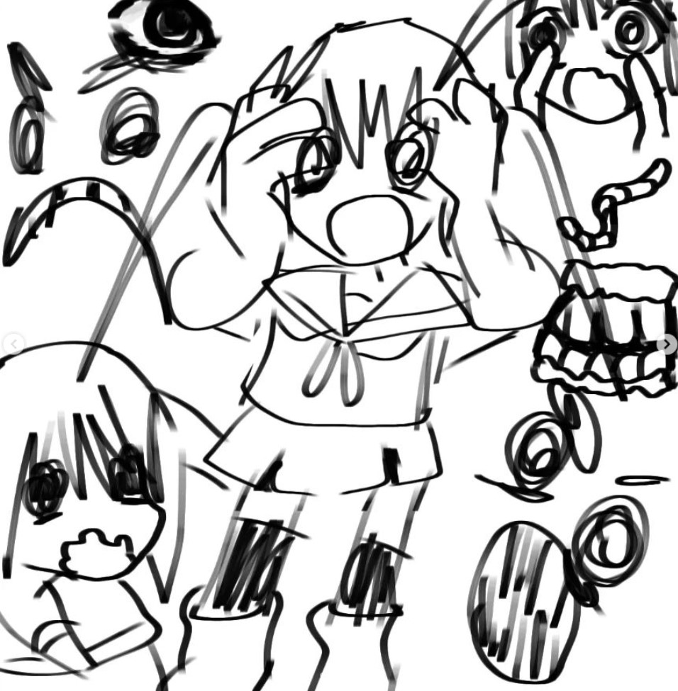

𝐁𝐚𝐛𝐚

BLAH BLAHHHHH
My endlessly hardworking baba,
You provided your family
The life you imagined as a child
I want you to rest.
You seem drained.
I've never seen you cry before.
Nothing but smiles, giggles, and laughter
You are constantly working.
And the photographs are missing.
I love you and value everything you do.
And I hardly show it.
I am frequently stubborn.
Thank you for providing me with a home.
A bed, clothes, and a phone
Thank you very much for the dinner.
And the hugs when I'm feeling down.
Thank you for making the shoes I wear.
I swear you're the greatest.
But, for the most part,
Thank you very much for marrying my mother.
The lady who loves you
And adores us
Exactly as much as my father.